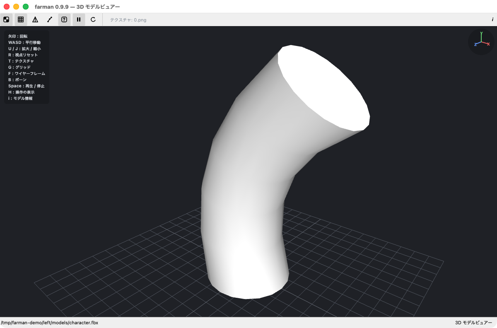

プラグイン
farman は、ビュアーやアーカイブ形式を後から追加できる外部プラグインに対応しています。 公式プラグインのほか、第三者が作成したプラグインも導入できます。
外部プラグインはネイティブコードで、farman と同じ権限で動作します。安全のため、外部プラグインの読み込みは既定でオフです。信頼できる提供元のプラグインだけを有効にしてください。
プラグイン一覧
3D モデルビュアー (FBX)
.fbx 形式の 3D モデルを farman 内で表示。テクスチャ（外部・埋め込み）・スケルタルアニメーション・複数マテリアル・床グリッド・ワイヤーフレーム・ボーン（スケルトン）表示に対応。マウス / キーボードで回転・平行移動・拡大縮小できます（操作キーは本体の「設定 → キーバインド」で変更できます）。

プラグインは順次追加予定です。作ってみたい方は下の「プラグイン開発」を参照してください。
導入手順
外部プラグインは、farman のプラグインディレクトリに置いて読み込みます。手順はどのプラグインでも共通です。
- お使いの OS 用のファイルを、そのプラグインの配布ページからダウンロードします（macOS:
.dylib/ Windows:.dll/ Linux:.so）。 - farman の 設定 → プラグイン で「開く」ボタンを押し、プラグインディレクトリを開きます。ビュアープラグインは
viewers、アーカイブプラグインはarchivesのサブフォルダにファイルを置きます。 - 同じ画面で「外部プラグインの読込みを許可する」をオンにします（既定はオフ）。
- farman を再起動します。設定 → プラグインの一覧に読み込まれたプラグインが表示されれば導入完了です。
macOS: 公式プラグインは署名 + 公証済みでそのまま読み込めます。未署名の第三者プラグインはダウンロード時の隔離により初回ロードがブロックされることがあります（提供元の案内に従ってください）。Windows: 未署名のプラグインは SmartScreen の警告が出ることがあります。
プラグイン開発
farman のプラグインは C++ / Qt で作成できます。ビュアー用の IViewerPlugin、アーカイブ用の IArchivePlugin インターフェースを実装し、動的ライブラリとしてビルドします。ABI（Qt バージョン）の一致、優先度の割り当て、macOS の実行時リンク、CI テンプレートなどをガイドにまとめています。